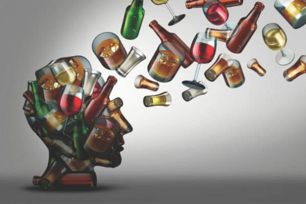

Токсини
Токсини — отруйні речовини, що виробляються живими клітинами або організмами. Індивідуальні сполуки, що спричинюють отруєння. Токсини майже завжди є білками, здатними до породження хвороби при контакті або абсорбції тканинами тіла через взаємодію з біологічними макромолекулами, наприклад ферментами або рецепторами. Токсини значно відрізняються силою дії від незначних (як токсин бджолиного укусу) до майже негайно смертельних (як зміїна отрута). Токсини також відрізняються механізмом дії, і можуть бути надзвичайно складними (отрута коничного равлика містить десятки маленьких білків, кожен з яких націлений на специфічний нервовий канал або рецептор), або відносно простими маленькими білками.
Вплив токсинів на організм людини
Отрути — речовини, здатні при дії на живий організм викликати різке порушення нормальної його життєдіяльності — отруєння або смерть. Віднесення тих або інших речовин до отрути є умовним, оскільки токсичність багатьох з них визначається обставинами або способом введення в організм. Використання хімічних речовин як отрути відомо за давніх часів. Як зброя ураження отрути застосовувались під час полювання на диких тварин та у боротьбі між племенами. З розвитком хімії та хімічних технологій формувалася наука про отруту — токсикологія. Отрути стають грізною зброєю, засобом масового знищення людей, бойовими отруйними речовинами, котрі в широких масштабах стали застосовуватися в першу світову війну, а потім i в інших військових конфліктах (Ефіопія, Китай, В'єтнам, Іран). Хімічну зброю за масштабами її вражаючої дії можна порівняти з ядерною зброєю середнього калібру. На рівнi з бойовими отруйними речовинами, військові токсикологи приділяють велику увагу i хімічним речовинам, які при руйнуванні хімiчно-небезпечних підприємств можуть викликати масові ураження особового складу військ та населення. Широке використання токсичних речовин у народному господарстві, великі викиди шкідливих речовин у навколишнє середовище викликає «екологічну» небезпеку для населення окремих регіонiв нашої планети, а також небезпеку розвитку генетичних захворювань, зв'язаних з порушенням апарату спадковості людини внаслідок їхнього впливу на організм. Звідси стає зрозумілим головне призначення токсикології як науки — розкриття суті впливу отрути на організм та створення на цій основі ефективних засобів застереження i лікування отруєнь.
Харчові добавки
Наша їжа сьогодні дедалі більше містить харчових добавок, які не дають продуктам черствіти, окислюватись, пліснявіти, поліпшують зовнішній вигляд. Державний комітет із захисту прав споживачів України пропонує список шкідливих добавок. Для прикладу: Е102, 110, 120, 124, 127 – признані небезпечними. Е131, 142, 210, 213, 215, 217, 240, 330 – визнані канцерогенними.
Вчені довели, що найбільше страждають саме діти. Штучні харчові барвники впливають на мозок дитини так само, як свинець, крім того, деякі з них можуть викликати звикання. Коли малюк регулярно вживає їжу з добавками і замінниками, в його організмі перестає працювати так звана «система сповіщення» про отриману отруту. Наслідком вживання барвників із солодощами стає неуважність, неконтрольована поведінка, що часто переростає в синдром гіперактивності. Що більше дитина вживає яскравих солодощів, то більше вона ризикує захворіти нервовими і психічними розладами.
ГМО
Не можна обминути таку загрозу для здоров’я як генетично-модифіковані продукти, що дедалі частіше появляються на нашому столі. Сьогодні маємо до 60% модифікованої сої, кукурудзи салатної, гороху. Багато вчених світу домагаються, щоб уряди країн заборонили визнавати такі продукти, як такі, що можна вживати в їжу. У нас на державному рівні такого закону нема.
Шкідливі звички
Звички, які завдають шкоди здоров’ю, життю людини або не відповідають культурним нормам суспільства, в якому живе людина – шкідливі. Найбільш шкідливими звичками, які можуть сформуватись у шкільному віці, є куріння та вживання алкоголю, наркотичних речовин. Саме ці звички згубно впливають на організм, який формується і ще не має належно рівня захисту від зовнішніх і внутрішніх несприятливих чинників, що часом призводять до незворотних процесів здоров’я людини. Саме про ці явища дедалі частіше говорять як про національне лихо, що набуває загрозливих масштабів. Кажуть, воно може цілком перекреслити майбутнє України, завдати шкоди більшої як Чорнобиль. Найменше йому – соціальна алкоголізація суспільства 65% дорослого населення вживає спиртні напої. Непокоїть, так званий, пивний алкоголізм, який набагато підступніший за горілчаний.
Алкоголь
Алкоголь — наркотична отрута, що діє насамперед на нервові клітини кори головного мозку. При цьому значно ослаблюється процес гальмування і відносно переважає процес збудження. Великі дози алкоголю чинять паралізувальний вплив на деякі відділи центральної нервової системи.
При ураженні центрів довгастого мозку настає порушення терморегуляції, дихання і серцевої діяльності — так званий коматозний стан. Алкоголізм викликає глибокі розлади діяльності шлунково-кишкового тракту, печінки, органів дихання, нирок, статевих залоз та ін. Організм алкоголіка втрачає опірність до захворювань. Алкоголізм зумовлює стійкі порушення психіки, велике зниження працездатності, швидку стомлюваність, ослаблення пам'яті, деяку безтурботність, брехливість, несталість настрою, дратівливість і схильність до конфліктів. На ґрунті алкоголізму бувають запої, розвиваються різні психози—біла гарячка, корсаковський психоз та інше. Алкоголізм призводить до побутових і виробничих травм, аварій на транспорті, злочинів, порушень правил громадської поведінки, руйнування сімей.
Учені з’ясували: якщо хоча б один раз випити сто грамів горілки, то в головному мозку людини гине дуже багато активних клітин. А конкретніше 7,5 тис. нервових клітин.